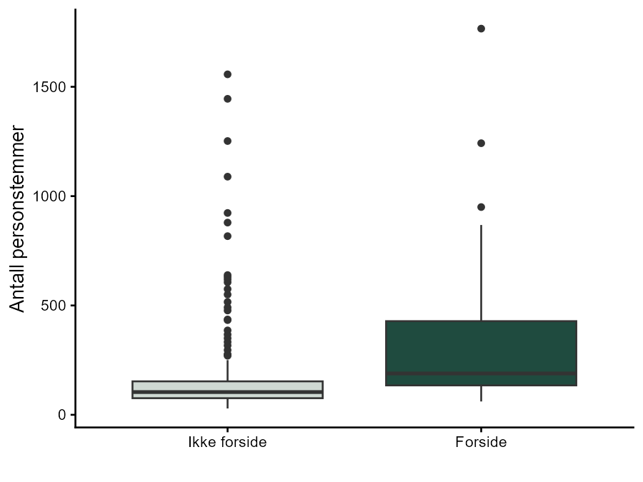

Prosjektet
Stemmesedlene i kommunevalget i Oslo er falset. En velger som kommer til valglokalet, får en falset stemmeseddel og ser bare de første 31 kandidatene — grensen var nummer 30 under utformingen som ble brukt i 2011 og 2015, og nummer 31 under utformingen som ble brukt i 2019 og 2023. Med mindre velgeren bretter ut stemmeseddelen, får hun aldri sett resten av navnene.
Dette prosjektet tester om det har betydning:
H1: I kommunevalget i Oslo er det en forskjellsbehandling til fordel for kandidater som står på forsiden av stemmeseddelen, slik at de får en uforholdsmessig stor andel personstemmer.
Det naturlige eksperimentet
Det er vanskelig å fastslå kausalitet i forskning på listeplasseffekter, fordi partiene rangerer kandidatene med overlegg: kandidatene som står høyt på listen, er de partiet forventer skal gjøre det bra, slik at listeplass er endogen. To partier i Oslo løser dette problemet ved et uhell, ved å ordne deler av listen alfabetisk:
- Høyre ordnet alle sine kandidater uten stemmetillegg — nummer 11 til 65 — alfabetisk i 2011
- Venstre bruker alltid alfabetisk ordning under en bestemt posisjon på listen: fra nummer 17 i 2011 og 2015, fra nummer 21 i 2019, og fra nummer 25 i 2023
Å være født med et etternavn som begynner med en bestemt bokstav, bør ikke være korrelert med politisk erfaring, kjendisstatus eller noe annet som trekker personstemmer. Den alfabetiske ordningen skaper derfor as-if-random-betingelser, og den estimerte effekten bør skyldes utelukkende kandidatenes plassering på stemmeseddelen.
Kandidater med stemmetillegg er utelatt, siden de ikke er tilfeldig tildelt sin plassering. Det samme gjelder partiveteranen Odd Einar Dørum, som fikk den siste, hederlige plassen nummer 65 av Venstre i 2019 og 2023 utenfor den alfabetiske ordningen, samt én uteligger som fikk nesten 4000 personstemmer der ingen av de andre kom over 2000.
Dette gir et utvalg på 236 kandidater, hvorav 66 står på forsiden av stemmeseddelen.
Analysen
Avhengig variabel er antall personstemmer fra velgere som stemte på kandidatens eget parti (personalvotes_own_loc). Behandlingsvariabelen, first_page, er konstruert fra kandidatens listeplass og stemmeseddelens utforming det aktuelle valgåret:
mutate(
first_page =
case_when(rank_loc > 30 & year < 2019 ~ 0,
rank_loc > 31 & year > 2015 ~ 0,
.default = 1))De to gruppene oppsummeres med et boksplott, og forskjellen i gjennomsnitt testes med en t-test.

Resultatet
| Ikke forside | Forside | |
|---|---|---|
| n | 170 | 66 |
| Gjennomsnittlig personstemmer (SD) | 184 (241) | 328 (315) |
Forskjellen i gjennomsnitt er 144 stemmer til fordel for kandidatene som står på forsiden. Med en p-verdi på 0,001 er resultatet signifikant på 95 % konfidensnivå: den sanne forskjellen i gjennomsnitt er ikke lik 0. Kandidatene får flere personstemmer utelukkende i kraft av å stå på forsiden av stemmeseddelen, noe som bekrefter hypotesen.
Siden fordelen skyldes brettingen av papiret og ikke noe kandidatene selv har gjort, er det verdt å merke seg at alfabetisk ordning heller ikke er en rettferdig erstatning for en rangering. Den er ikke fullstendig tilfeldig — kandidater kan ikke unnslippe sitt etternavn uten å endre det juridisk, og for kandidater som stiller flere ganger, følger ulempen med fra ett valg til det neste.
Dataene
Datasettet omfatter kandidater fra de ni partiene med stabil representasjon i Oslo bystyre i kommunevalgene 2011, 2015, 2019 og 2023. Det er utledet fra to datasett som finnes på jon.fiva.no/data.htm: Local Candidate Dataset (LCD v12) av Jon H. Fiva, Rune J. Sørensen og Reidar Vøllo, og Norwegian Parliamentary Elections 1906–2021 av Jon H. Fiva og Daniel M. Smith.
Analysen er utført i R med tidyverse og gtsummary. Se hele kildekoden i first_page_natural_experiment.qmd.